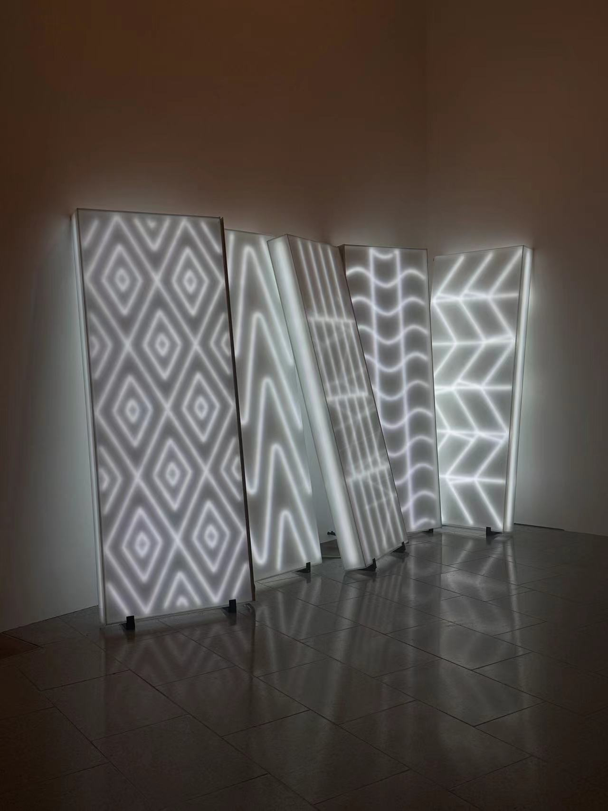
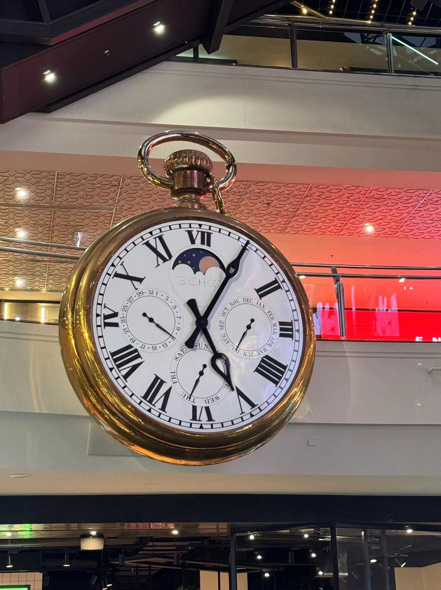
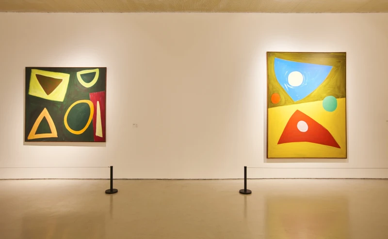
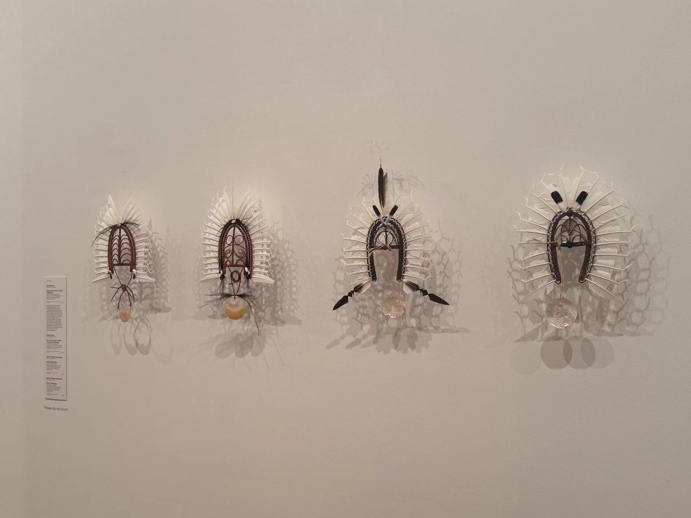
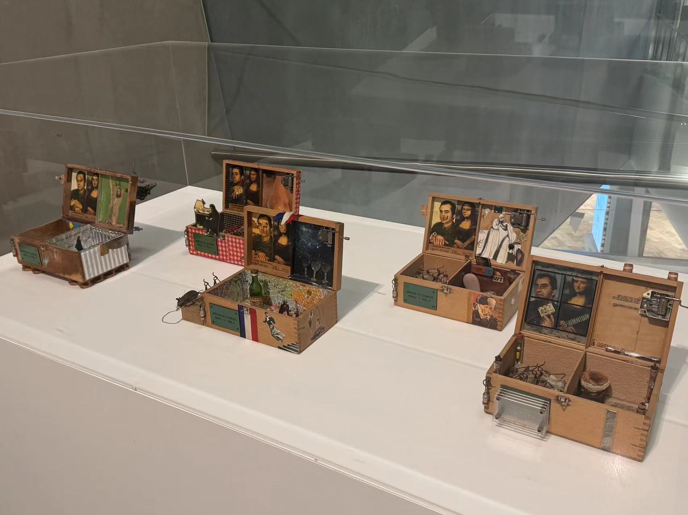
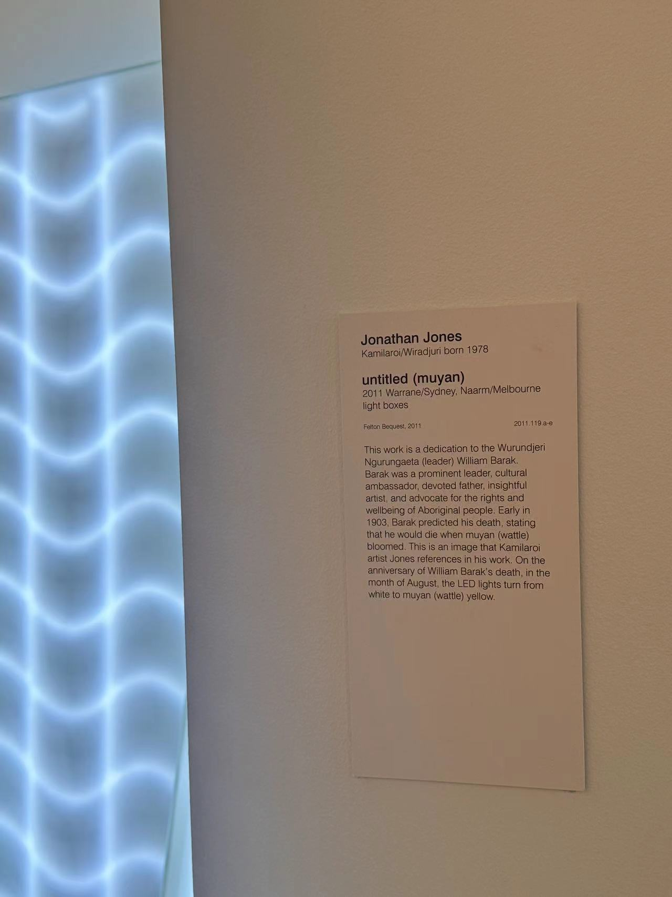

Shapes in Art
Pedagogical Philosophy: Shapes can help children understand form and structure, aiding in the communication of complex ideas, making them a powerful tool for non-verbal communication.






Museum Activities:
- Shape Scavenger Hunt: Educators can create scavenger hunts where children identify different shapes in artworks and discuss their findings with educators.
- Shape Creation Workshops: After the hunt, children can create their own artworks using the shapes they've observed.
Values:
Shapes encourage geometric thinking and spatial awareness, helping children articulate and understand complex visual information.